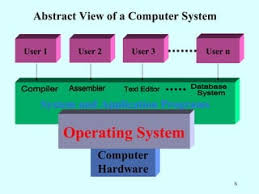
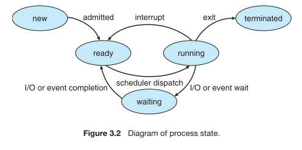

Operating System
@Debuggers
What is an Operating System?
A program that acts as an intermediary between a user of a computer and the computer hardware.
An operating System is a collection of system programs that together control the operations of a computer
system.
Some examples of operating systems are UNIX, Mach, MS-DOS, MS-Windows, Windows/NT, Chicago, OS/2,
MacOS, VMS, MVS, and VM.
Operating system goals:
- Execute user programs and make solving user problems easier.
- Make the computer system convenient to use.
- Use the computer hardware in an efficient manner.
Computer System Components:
- Hardware-provides basic computing resources (CPU, memory, I/O devices).
- Operating system-controls and coordinates the use of the hardware among the various application
programs for the various users.
- Applications programs--Define the ways in which the system resources are used to solve the computing.
problems of the users (compilers, database systems, video games, business programs).
- users(people, machines, other computers).
Abstract View of System Components
abstract of the system components.

Operating System Definitions
Resource allocator-manages and allocates resources.
Control program-controls the execution of user programs and operations of I/O devices .
Kernel-The one program running at all times (all else being application programs).
Components of OS:-OS has two parts. (1)Kernel.(2)Shell.
- Kernel is an active part of an OS i.e., it is the part of OS running at all times. It is a programs which
can interact with the hardware. Ex: Device driver, dll files, system files etc.
- Shell is called as the command interpreter. It is a set of programs used to interact with the application
programs. It is responsible for execution of instructions given to OS (called commands).
Operating systems can be explored from two viewpoints: the user and the system.
User View:-From the user’s point view, the OS is designed for one user to monopolize its resources, to
maximize the work that the user is performing and for ease of use.
System View: From the computer's point of view, an operating system is a control program that manages the
execution of user programs to prevent errors and improper use of the computer. It is concerned with the
operation and control of I/O devices.
function of operatings system:
An Operating System (OS) serves as the intermediary between computer hardware and users. Its primary functions include:
- Resource Management:-Allocates CPU, memory, and storage to various applications and processes.
- Process Management:-Handles the creation, scheduling, and termination of processes.
- File System Management:-Manages files, directories, and data storage.
- User Interface:-Provides user interfaces such as command-line interfaces (CLI) or graphical user interfaces (GUI).
- Security and Access Control: -Protects data and system resources through user authentication and permission controls.
- Device Management:-Controls and manages hardware devices such as printers, disk drives, and keyboards.
Evolution of operating system:
Batch Processing System
This type of OS accepts more than one jobs and these jobs are batched/ grouped together according to their
similar requirements. This is done by computer operator. Whenever the computer becomes available, the
batched jobs are sent for execution and gradually the output is sent back to the user.
It allowed only one program at a time.
This OS is responsible for scheduling the jobs according to priority and the resource required.
Multiprogramming Operating System:
This type of OS is used to execute more than one jobs simultaneously by a single processor. it increases CPU
utilization by organizing jobs so that the CPU always has one job to execute.
The concept of multiprogramming is described as follows:
All the jobs that enter the system are stored in the job pool( in disc). The operating system loads a set
of jobs from job pool into main memory and begins to execute.
During execution, the job may have to wait for some task, such as an I/O operation, to complete. In
a multiprogramming system, the operating system simply switches to another job and executes.
When that job needs to wait, the CPU is switched to another job, and so on.
When the first job finishes waiting and it gets the CPU back.
As long as at least one job needs to execute, the CPU is never idle.
Multiprogramming operating systems use the mechanism of job scheduling and CPU scheduling.
Time-Sharing/multitasking Operating Systems:
Time sharing (or multitasking) OS is a logical extension of multiprogramming. It provides extra facilities such as:
Faster switching between multiple jobs to make processing faster.
Allows multiple users to share computer system simultaneously.
The users can interact with each job while it is running.
These systems use a concept of virtual memory for effective utilization of memory space. Hence, in this OS, no
jobs are discarded. Each one is executed using virtual memory concept. It uses CPU scheduling, memory
management, disc management and security management. Examples: CTSS, MULTICS, CAL, UNIX etc.
Operating System Services
Following are the five services provided by operating systems to the convenience of the users.
- Program Execution
The purpose of computer systems is to allow the user to execute programs. So the operating system
provides an environment where the user can conveniently run programs. Running a program involves the
allocating and deallocating memory, CPU scheduling in case of multiprocessing.
- I/O Operations
Each program requires an input and produces output. This involves the use of I/O. So the operating
systems are providing I/O makes it convenient for the users to run programs.
- File System Manipulation
The output of a program may need to be written into new files or input taken from some files. The
operating system provides this service.
- Communications
The processes need to communicate with each other to exchange information during execution. It may
be between processes running on the same computer or running on the different computers. Communications
can be occur in two ways:
- shared memory or
- message passing
- Error Detection
An error is one part of the system may cause malfunctioning of the complete system. To avoid such a
situation operating system constantly monitors the system for detecting the errors. This relieves the user of the
worry of errors propagating to various part of the system and causing malfunctioning.
Following are the three services provided by operating systems for ensuring the efficient operation of
the system itself.
- Resource allocation
When multiple users are logged on the system or multiple jobs are running at the same time, resources
must be allocated to each of them. Many different types of resources are managed by the operating system.
- Accounting
The operating systems keep track of which users use how many and which kinds of computer resources.
This record keeping may be used for accounting (so that users can be billed) or simply for accumulating usage statistics.
- Protection
When several disjointed processes execute concurrently, it should not be possible for one process to
interfere with the others, or with the operating system itself. Protection involves ensuring that all access to
system resources is controlled. Security of the system from outsiders is also important. Such security starts with
each user having to authenticate him to the system, usually by means of a password, to be allowed access to the
resources.
system call
System calls provide an interface between the process and the operating system.
System calls allow user-level processes to request some services from the operating system which process
itself is not allowed to do.
For example, for I/O a process involves a system call telling the operating system to read or write particular
area and this request is satisfied by the operating system.
process concept
A process is a program in execution. A process is more than the program code, which is
sometimes known as the text section. It also includes the current activity, as represented by the value of
the program counter and the contents of the processor's registers. In addition, a process generally
includes the process stack, which contains temporary data (such as method parameters, return
addresses, and local variables), and a data section, which contains global variables.
An operating system executes a variety of programs:
Batch system -jobs
Time-shared systems -user programs or tasks
Process - A program in execution; process execution must progress in sequential fashion.
A process includes: program counter , stack, data section.
Process State
As a process executes, it changes state.
New State:-The process is being created.
Running State:-A process is said to be running if it has the CPU, that is, process actually using the CPU at
that particular instant.
Blocked (or waiting) State:-A process is said to be blocked if it is waiting for some event to happen such that
as an I/O completion before it can proceed. Note that a process is unable to run until some external event
happens.
Ready State:-A process is said to be ready if it needs a CPU to execute. A ready state process is runnable
but temporarily stopped running to let another process run.
Terminated state:-The process has finished execution.
